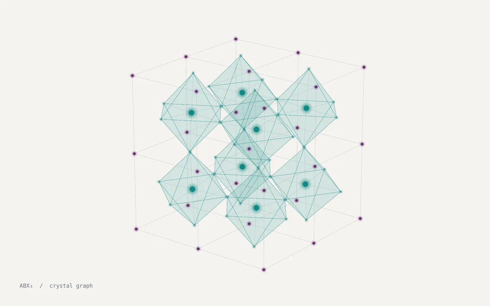
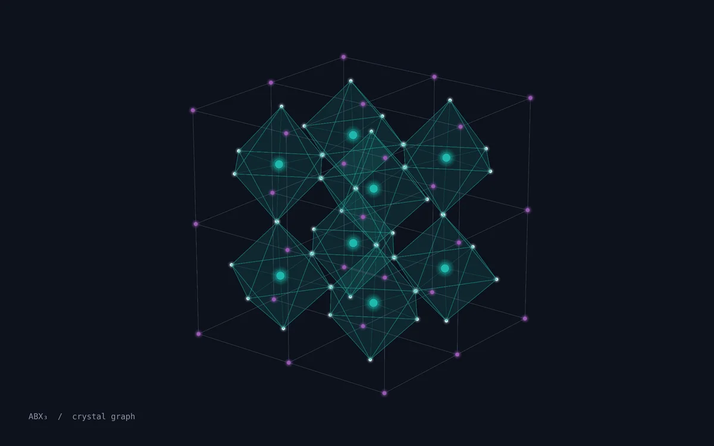

UNDERGRADUATE THESIS / 2026–2027ONGOING
Reliability-aware graph learning for lead-free perovskites
My undergraduate thesis studies how crystal graph models can be used to predict materials properties, with attention to how reliable those predictions are.


Research focus
Lead-free halide perovskites are being investigated as potential photovoltaic absorber materials. My work examines graph-based representations of crystal structures and their use in predicting relevant material properties.
Beyond prediction accuracy, the focus includes understanding where a model is uncertain and how much confidence can be placed in its outputs.
Methods under study
- Crystal graph learning: CGCNN and ALIGNN are among the model approaches considered for structure-based prediction.
- Model reliability: Studying uncertainty-aware prediction and how models behave on less familiar structures.
- Physical calculations: Density functional theory (DFT) forms part of the computational research context.
Current status
The thesis is ongoing. No validated results, material candidates or performance claims are published on this page yet.